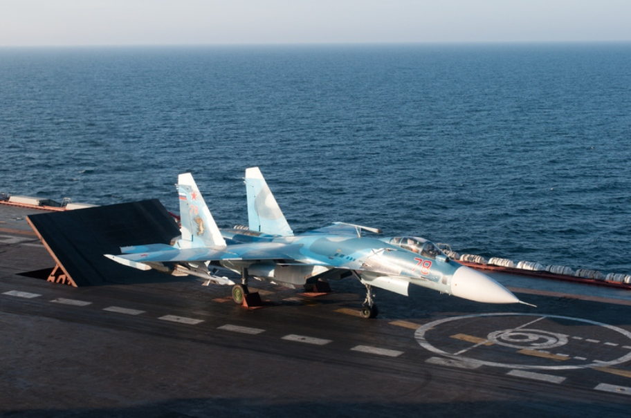
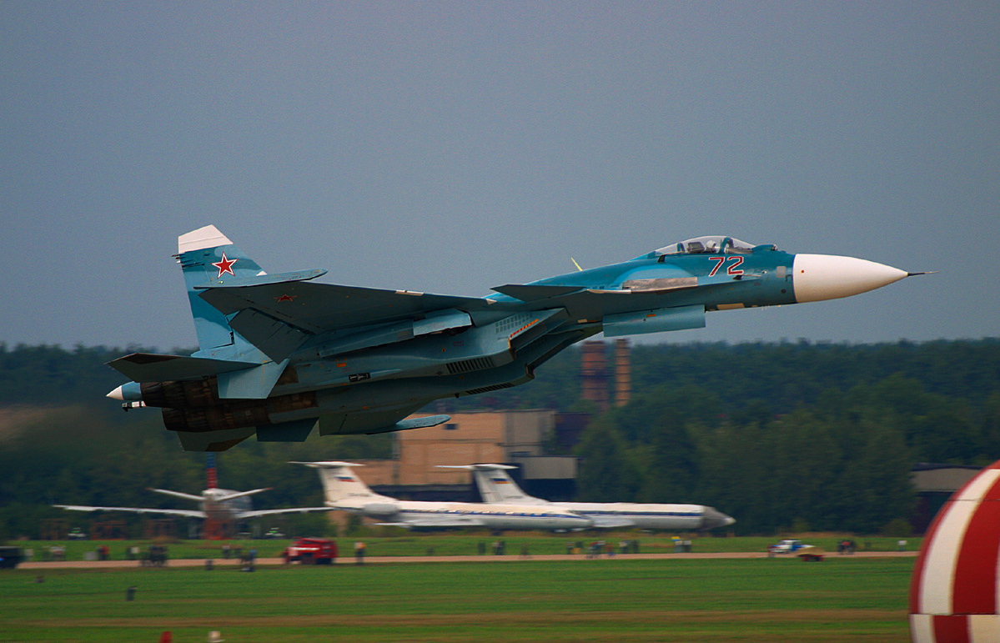
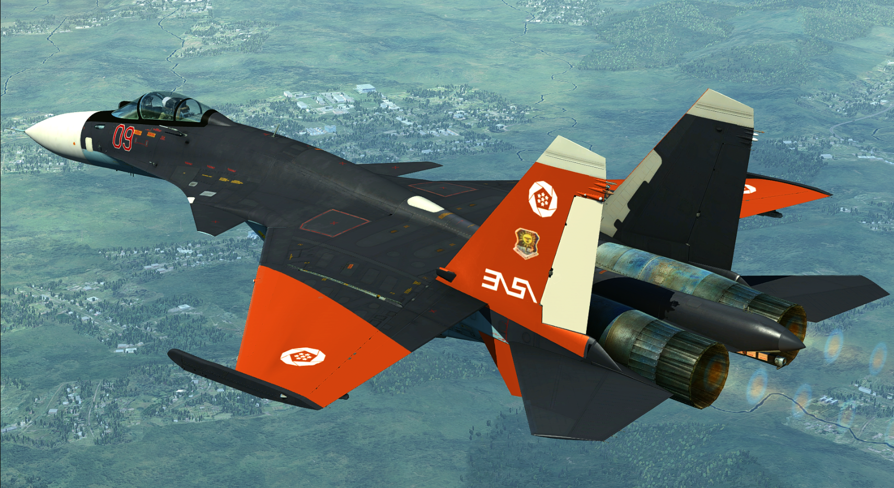

| Descrição | |
|---|---|
| Função: | Multi-Função e Superioridade Aérea |
| Local de Origem: | União sovietica e Russia |
| Fabricante: | Sukhoi
Komsomolsk-on-Amur Aircraft Production Association |
| Primeiro Voo: | 17 de Augosto de 1987 |
| Introduzido em: | 31 de Agosto de 1998 |
| Status: | Em Serviço |
| Utilziadores: | Russia |
| Produzido: | 1987 a 1999 |
| Caractersiticas Gerais | |
| Tripulação: | 1 |
| Comprimento: | 22m |
| Altura: | 5.93m |
| Envergadura das Asas: | 14.7m |
| Area das Asas: | 67.84m² |
| Peso Vazio: | 18.400kg |
| Peso Bruto: | 29.940kg |
| Peso Máximo de Decolagem: | 33.000kg |
| Capacidade de Combustivel: | 9.500kg |
| Performace | |
| Motores: | 2 x Saturn Al-31F3 Afterburnig Turbofan |
| Empuxo: |
|
| Velocidade Máxima: | Mach 1.82 ou 2.300km/h |
| Alcance: | 3.000km |
| Alcance de Combate: | Não Disponivel ao Publico |
| Armamento | |
| Armas: | 1 Canhão Automatico de 30mm Gryazev-Shipunov GSh-30-1 com 150 disparos |
| Hardpoint | 12 Hardpoint Externos com capacidae ed até 6.500kg |
| Foguetes |
|
| Misseis |
Ar-Ar:
Ar-Navio:
|
| Bombas |
|
Sukhoi Su-33 um caça de superioridade aérea e multi-função de dois motores baseado para servir em porta-aviões, desevolvido pela Sukhoi e
fabricado pela Komsomolsk-on-Amur Aircraft Production Association, com o Su-33 sendo derivado do Su-27, no qual o projeto foi conhecido como Su-27K. O Su-33 possi canards, com as suas asas
sendo maior que as do Su-27 para uma velocidae em stall menor. Além disso ele possui trens de pouso mais robustos que o do Su-27, por conta que ele é desevolvido para pousar em porta-aviões.

Abordo do porta-aviões Admiral Kuznetsov, ele foi utilizado no ano de 19995, com ele entrando em serviço oficail em 1998. Com a queda do regime sovietico, e com a redução subsequente da
marinha russa, até aquele momento foram produzidos somente 24 aeronaves.

O Su-33 apareceu na franquia "Ace Combat", com a sua aparição mais recente sendo em "Ace Combat 7: Skies Unknown" no qual eles são lançados pelo
porta-aviões Njörðr pelos adversarios do personagem no jogo.

Su-33 em "Ace Combat 7"